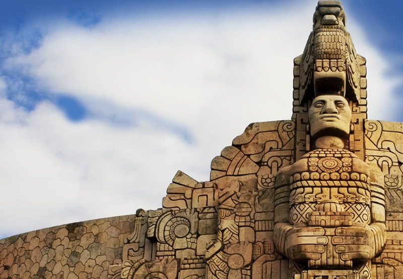

PUEBLOS MAGICOS DE YUCATAN

Acercarse
a merida y sus pueblos magicos es cncontrase con gente calida dispuesta
a conversar, enseña su labor o su legado gastronomico.
Es sumergirse en cenotes sagrados, es recibir las bondades de los dioses en chichen itza.
En bici o a pie, andar por sus calles llenara de magia el corazón.


TEKAX SISAL
ESPITA


MANI
MOTUL
IZAMAL
En Yucatán, la cultura maya lo inunda todo en sus pueblos, zonas arqueológicas y ciudades.
Sus pueblos tradicionales derrochan encanto, presumen artesanías
exquisitas e invitan a
probar el inolvidable sabor de su gastronomía.
Para conocer Yucatán a profundidad hay que recorrerlo con pasión
y regresar una y otra vez.
Yucatán viene de una historia que cuenta que los habitantes mayas, cargando joyas de jade,
contestaron a los españoles “yuuc catán” cuando éstos les preguntaron qué llevaban en las manos.
Tiene un clima cálido subhúmedo y presenta una temperatura de 26°C anual.
Cuenta con los pueblos mágicos de Izamal, Valladolid, Maní y Sisal.
Las ciudades prehispánicas de Uxmal y Chichén Itzá son Patrimonio de la Humanidad.
...Autores...
Canul Ek Jesus
Chi Joel
Escamilla Ramirez Jose